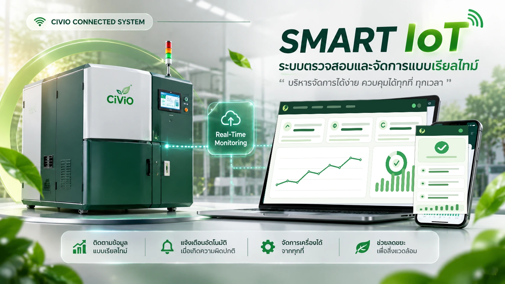

เตรียมเศษอาหาร
รวบรวมเศษอาหารและตรวจสอบประเภทวัตถุดิบที่เครื่องรองรับตามคู่มือ
CIVIO FOOD WASTE COMPOSTER
เปลี่ยนเศษอาหารให้เป็นวัสดุปรับปรุงดิน ด้วยกระบวนการภายในเครื่องที่ออกแบบมาเพื่อการใช้งานจริง ควบคุมการทำงานด้วย PLC, หน้าจอ Touchscreen และระบบ IoT
 01 / CIVIO ORIGINAL
01 / CIVIO ORIGINALเลือกรุ่นตามปริมาณเศษอาหารต่อวัน มีให้เลือก 9 รุ่น ตั้งแต่ 15 ถึง 1,000 กิโลกรัมต่อวัน
| รุ่นModel | ปริมาณการกำจัดขยะต่อวันDaily Processing Capacity | กว้าง (มม.)Width | ยาว (มม.)Length | สูง (มม.)Height | น้ำหนักเครื่องMachine Weight |
|---|---|---|---|---|---|
| CV15 | 15 กก. | 510 | 850 | 910 | 120 กก. |
| CV25 | 25 กก. | 1,010 | 1,330 | 1,130 | 550 กก. |
| CV50 | 50 กก. | 1,110 | 1,430 | 1,265 | 600 กก. |
| CV100 | 100 กก. | 1,090 | 2,230 | 1,515 | 900 กก. |
| CV150 | 150 กก. | 1,120 | 2,430 | 1,590 | 960 กก. |
| CV250 | 250 กก. | 1,160 | 2,880 | 1,665 | 1,150 กก. |
| CV500 | 500 กก. | 1,285 | 3,730 | 1,830 | 1,600 กก. |
| CV750 | 750 กก. | 1,380 | 4,430 | 2,065 | 2,100 กก. |
| CV1000 | 1,000 กก. | 1,420 | 4,630 | 2,115 | 2,600 กก. |
หมายเหตุ: ขนาดและน้ำหนักทั้งหมดเป็นค่าโดยประมาณ อาจมีการเปลี่ยนแปลงตามการปรับปรุงและดัดแปลงเครื่องจักรตามปกติ
รวบรวมเศษอาหาร ใส่ตามปริมาณที่กำหนด แล้วให้ระบบช่วยควบคุมกระบวนการแปรรูปตามคู่มือของรุ่นเครื่อง
รวบรวมเศษอาหารและตรวจสอบประเภทวัตถุดิบที่เครื่องรองรับตามคู่มือ
ใส่เศษอาหารตามปริมาณที่กำหนด และเลือกโหมด Automatic
เครื่องบดสับและดำเนินกระบวนการภายใน พร้อมควบคุมผ่านหน้าจอและระบบ IoT
เลือกโหมด Unloading และนำวัสดุที่ได้ไปใช้ตามคำแนะนำที่เหมาะสมกับพืชและดิน

ภาพจำลองแนวคิดCIVIO SMART IOT
ระบบ IoT ช่วยเชื่อมต่อการทำงานของเครื่อง เพื่อให้ผู้ใช้งานตรวจสอบและบริหารจัดการได้สะดวกยิ่งขึ้น ตามความสามารถของระบบที่แสดงในเอกสารนำเสนอ
ติดตามสถานะการทำงานตรวจสอบการทำงานของเครื่องแบบเรียลไทม์
แจ้งเตือนอัตโนมัติรับการแจ้งเตือนเมื่อมีสถานะหรือเหตุการณ์สำคัญ
รายงานข้อมูลเชิงลึกดูข้อมูลและสรุปผลการทำงานเพื่อประกอบการจัดการ
ควบคุมระยะไกลสั่งการและจัดการระบบผ่านเครือข่ายตามสิทธิ์การใช้งาน
คลิกที่ภาพหรือปุ่มด้านล่างเพื่อเปิดวิดีโอแนะนำเครื่องกำจัดขยะเศษอาหาร CIVIO บน YouTube โดยตรง
เปิดวิดีโอเครื่อง CIVIO บน YouTube ↗พูดคุยกับทีมงานเพื่อสอบถามรุ่นเครื่อง ขนาดที่เหมาะสม และรายละเอียดการติดตั้ง